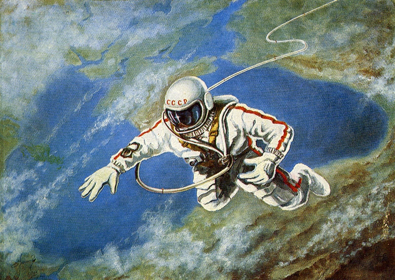
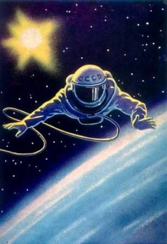
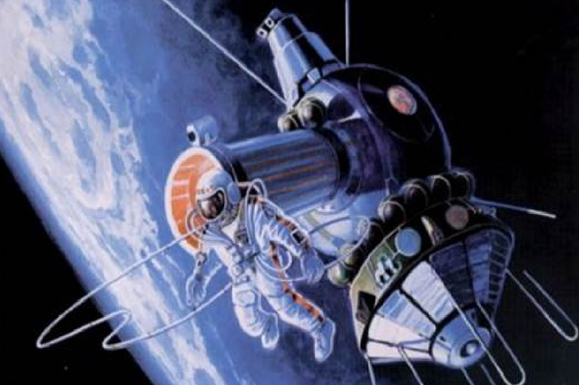
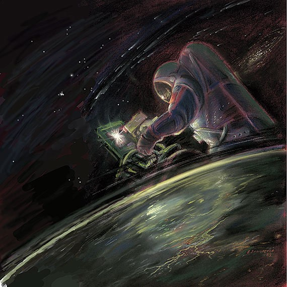
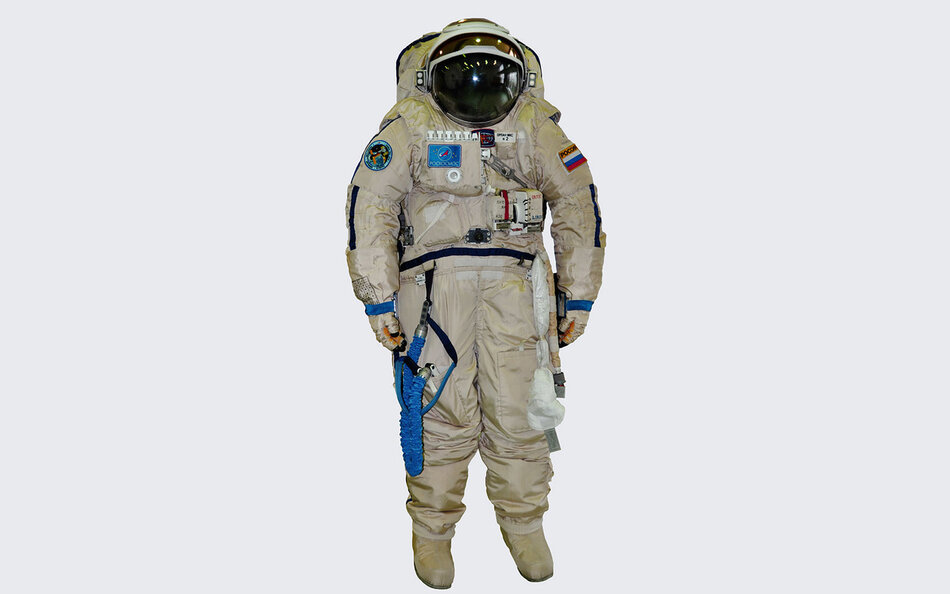
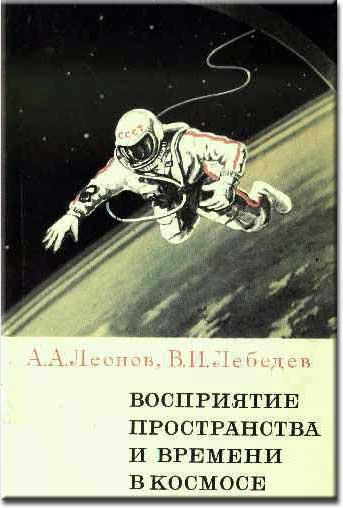
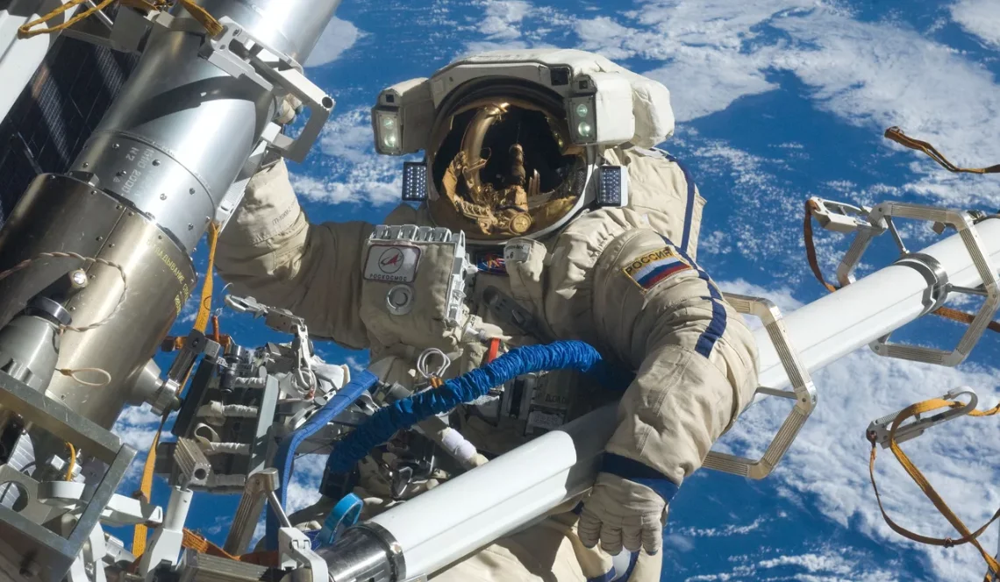
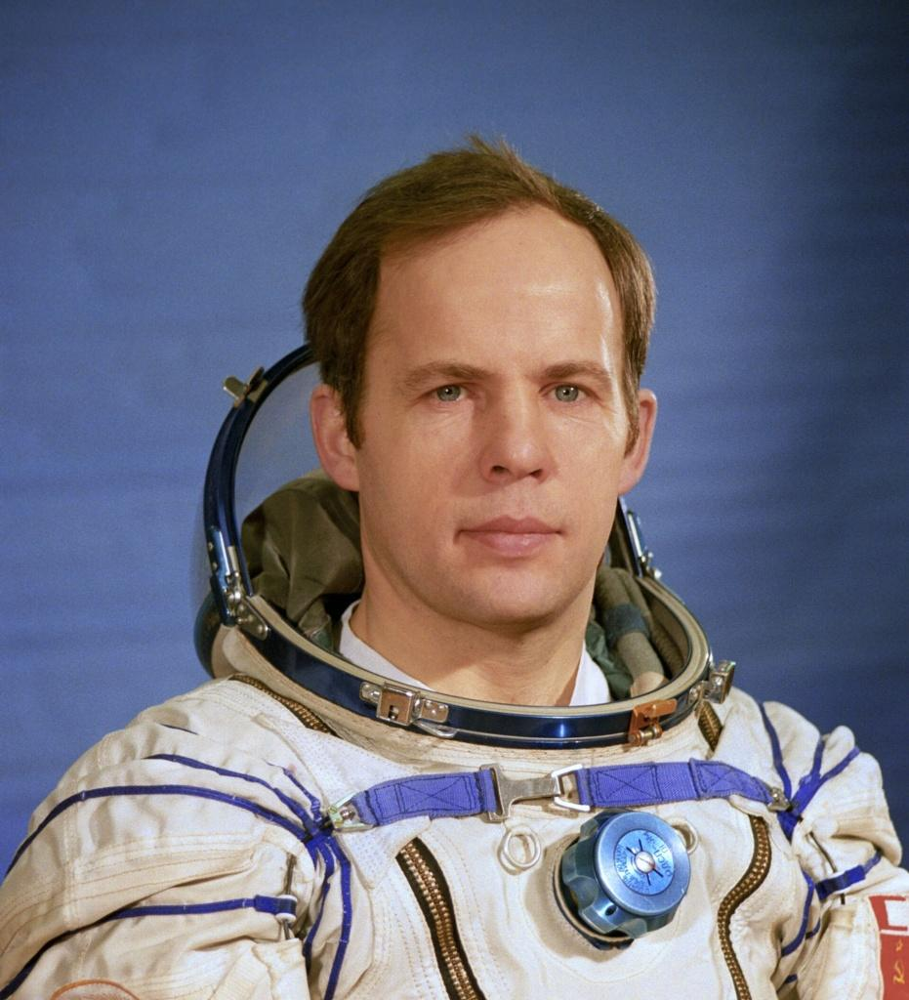
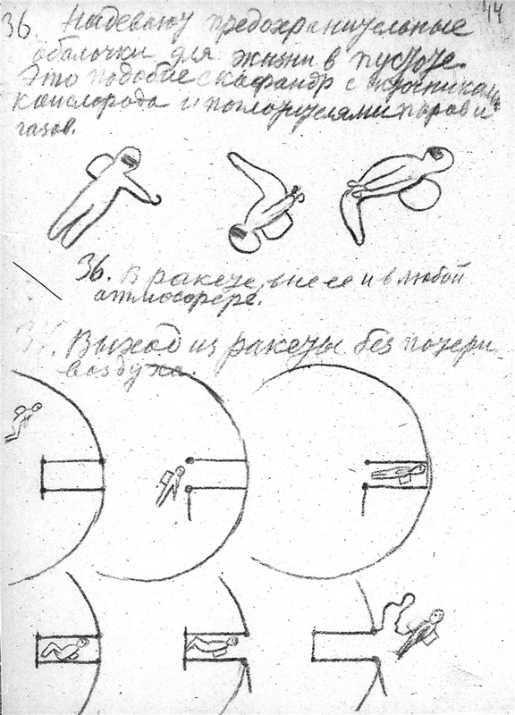
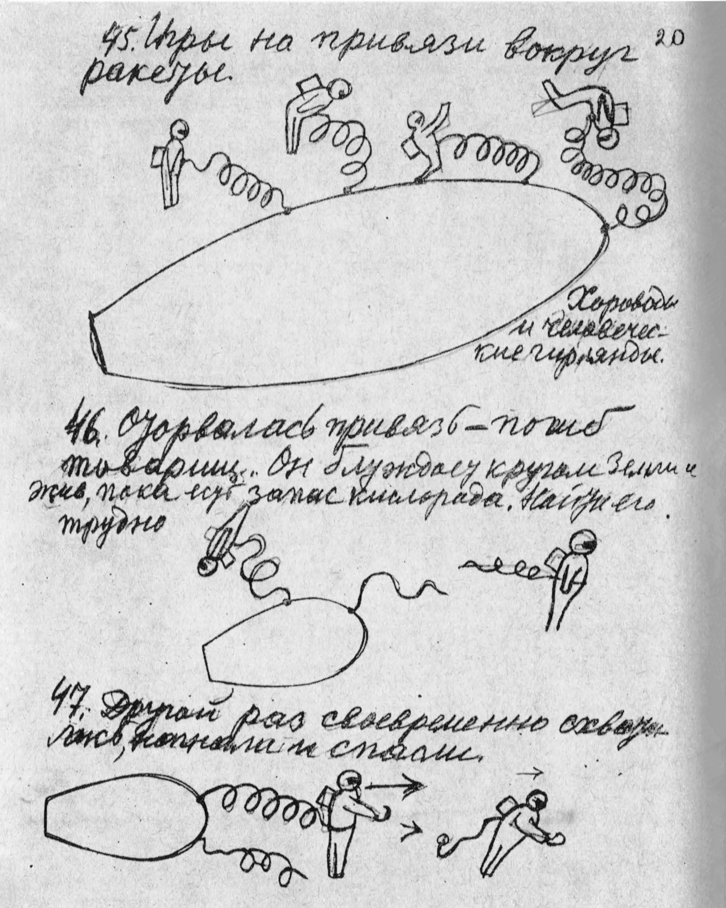

Картина Леонова. Над Черным морем.

Картина Леонова. Человек над планетой.

Картина Леонова. Выход в открытый космос.

Картина Джанибеков. Сварка в космосе.

Скафандр Орлан.

Обложка книги "Восприятие пространства и времени в космосе".

Свежее фото с выхода в космос.

Анатолий Соловьев.

Рисунки К.Э.Циолковского.

Рисунки К.Э.Циолковского.

Рисунки К.Э.Циолковского.
Алексей Леонов в открытом космосе (в цвете).
Выход Алексея Леонова в открытый космос.
Алексей Леонов в открытом космосе.
Первый выход в космос с 2 камер.